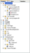
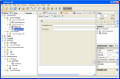
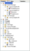
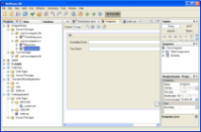

 
 
NetBeans IDE 4.0 では、プロジェクトが全面的に再設計されています。あらゆるアプリケーション開発作業は、プロジェクト内で発生します。IDE では、ソースファイル、そしてその構築、実行、デバッグ用に定義された設定全体をプロジェクトと呼びます。大きなコードベースを伴うアプリケーションを複数のプロジェクトに分割し、それらプロジェクト間のコンパイル時依存関係を作成することができます。そのうちの 1 つのプロジェクトを構築すると、コンパイル時クラスパス上の他のすべてのプロジェクトも構築されます。バージョン管理システムの CVS、VSS および PVCS に対する内蔵のサポートを利用し、プロジェクトを共有することができます。
一度に複数のプロジェクトを開き、それらを素早くかつ容易に切り替えて多数のプロジェクトを同時に扱うことができます。プロジェクトを開くと、「プロパティ」ウィンドウでその論理構造、「ファイル」ウィンドウでそのファイル構造を見ることができます。メニューおよびツールバーのボタンを使用し、プロジェクトに対する次の操作をクリック 1 回で行うことができます。
 構築
構築 実行
実行 デバッグ
デバッグ デバッガの接続
デバッガの接続
また、これらのアクションを 1 つのファイルに対して行うこともできます。
NetBeans IDE 4.0 には、さまざまな形のプロジェクト開発をサポートするために用意されたプロジェクトテンプレートとウィザードが含まれています。たとえば、Java アプリケーションプロジェクトテンプレートに基づいて Java アプリケーションを定義するウィザードなどです。
NetBeans IDE 4.0 には、ゼロからプロジェクトを作成するためのテンプレートとして、以下が付属しています。
 Java アプリケーション。主クラスを含むスケルトン J2SE プロジェクトを作成するためのテンプレート。
Java アプリケーション。主クラスを含むスケルトン J2SE プロジェクトを作成するためのテンプレート。- Java クラスライブラリ。主クラスを含まないスケルトン Java クラスを作成するためのテンプレート。
 Web アプリケーション。スケルトン Web アプリケーションを作成するためのテンプレート。
Web アプリケーション。スケルトン Web アプリケーションを作成するためのテンプレート。
ゼロからのプロジェクトの作成についての詳細は、『クイックスタートガイド』および『クイックスタートガイド (Web アプリケーション)』を参照してください。
NetBeans IDE 4.0 には、既存のソースファイル用のプロジェクトを作成するためのテンプレートとして、以下が付属しています。
- 既存のソースを使用する Java プロジェクト。既存の Java ソースに基づいて J2SE プロジェクトを作成するためのテンプレート。
- 既存のソースを使用する Web プロジェクト。既存の Web および Java ソースに基づいて Web プロジェクトを作成するためのテンプレート。
 既存の Ant スクリプトを使用する Java プロジェクト。構築用の Ant 構築スクリプトがある既存の Java ソースに基づいて J2SE プロジェクトを作成するためのテンプレート。
既存の Ant スクリプトを使用する Java プロジェクト。構築用の Ant 構築スクリプトがある既存の Java ソースに基づいて J2SE プロジェクトを作成するためのテンプレート。- 既存の Ant スクリプトを使用する Web プロジェクト。構築用の Ant 構築スクリプトがある既存の Web および Java ソースに基づいて Web プロジェクトを作成するためのテンプレート。
注: NetBeans IDE 4.0 で作業するために、Ant の知識が必要なわけではありません。ただし、Ant に関する知識があり、その使用方法を理解している上級ユーザーは、「Ant スクリプトが既存のプロジェクト」テンプレートの利用を推奨します。詳細は、この後の Ant との統合を参照してください。
NetBeans IDE 4.0 を使用してシステム内のフォルダを見ると、有効なプロジェクトのフォルダに  アイコンが付いています。
アイコンが付いています。
既存のソースファイルのインポートと利用の詳細は、『既存の Java ソースコードのインポート』および『既存の Web アプリケーションのインポート』をお読みください。
NetBeans IDE 4.0 では J2ME MIDP 2.0/CLDC 1.1 規格をサポートしており、Java テクノロジ対応のモバイルデバイス用のアプリケーション作成、テスト、デバッグが可能です。NetBeans IDE 4.0 では、MIDlet および MIDlet スイート用のテンプレートが用意され、J2ME パッケージについてソースエディタのコード補完機能があるため、モバイルアプリケーションのコーディングが簡略化されています。また、他社製のエミュレータを組み込んで、安定したテスト環境用のデバイス構成を作成することもできます。
J2ME MIDP 2.0/CLDC 1.1 規格に対する NetBeans IDE 4.0 のサポートには、以下が含まれます。
- J2ME Wireless Toolkit 2.2 との統合 (バージョンは Windows の場合 2.2 beta、Linux の場合 2.1)
- 他社製エミュレータプラットフォームとの統合
- 難読化および最適化の統合サポート
- ロケール別コンポーネントを組み込むことによる MIDP の地域対応サポート
- デバイス構成別のコード開発によるデバイス細分化の解決
- OTA (Over-The-Air) ダウンロードテスト機能
- 複数の J2ME MIDP サンプルプロジェクトの提供
J2ME MIDP アプリケーションの作成またはインポートについては、『クイックスタートガイド』および『既存の J2ME MIDP ソースコードのインポート』をお読みください。
NetBeans IDE 4.0 では、タグライブラリの作成を簡略化する機能が強化されています。新しく導入されたウィザードを使用し、タグハンドラやタグファイル、タグライブラリ記述子を作成することができます。作成したら、Java プログラミング言語か JavaServer Pages テクノロジ構文、あるいはその両方でタグを開発します。
NetBeans IDE 4.0 に付属しているタグライブラリテンプレートは、次のとおりです。
 タブライブラリ記述子。JSP2.0 構文 (J2EE1.4 プロジェクトの場合) または JSP1.2 構文 (J2EE1.3 プロジェクトの場合) でタグライブラリ記述子を作成するためのテンプレート。
タブライブラリ記述子。JSP2.0 構文 (J2EE1.4 プロジェクトの場合) または JSP1.2 構文 (J2EE1.3 プロジェクトの場合) でタグライブラリ記述子を作成するためのテンプレート。 タグファイル。JSP または XML 構文でタグファイルを作成するためのテンプレート (サンプルコード付き)。
タグファイル。JSP または XML 構文でタグファイルを作成するためのテンプレート (サンプルコード付き)。 タグハンドラ。BodyTag ハンドラまたは SimpleTag ハンドラ (JSP 2.0) を作成するためのテンプレート (サンプル Java ソースコード付き)。
タグハンドラ。BodyTag ハンドラまたは SimpleTag ハンドラ (JSP 2.0) を作成するためのテンプレート (サンプル Java ソースコード付き)。
タグライブラリの作成および仕様の詳細は、『Tag Library Tutorial』をお読みください。
NetBeans IDE 4.0 には、開発、コード補完、およびコンパイルのニーズに応えるいくつかのツールが付属しています。
- Apache Ant
 Tomcat サーバー
Tomcat サーバー- サーブレットおよび JSP API の API クラスとマニュアル
- JavaServer Pages 標準タグライブラリ (JSTL)
Apache Ant および Tomcat サーバーに対する特別な設定は必要なく、すぐに利用できます。新しいプロジェクトを作成すると、そのプロジェクトの種類に応じたライブラリが、プロジェクトのクラスパスに自動的に含まれます。また、プロジェクトのクラスパスに手動でライブラリを含めることもできます。


{kind=link}
{kind=link}
{kind=link}
{kind=link}
{kind=link}